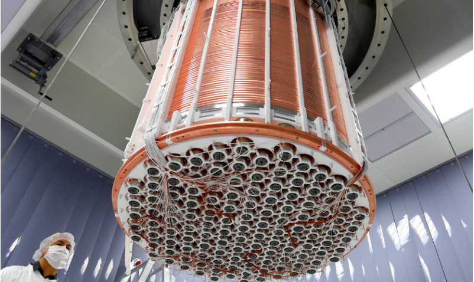
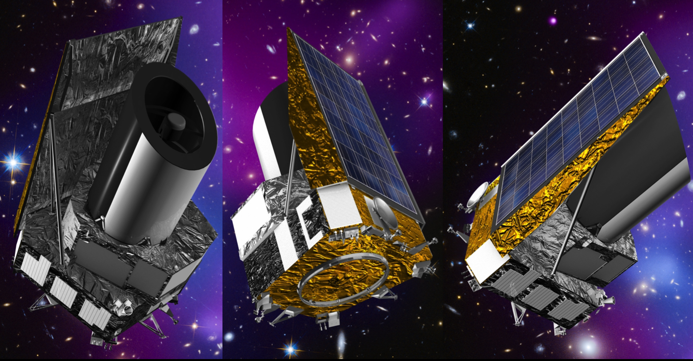

Dark Energy
In the 1990s, two groups of scientists set out to research the cosmic expansion. They looked at distant, type Ia supernovae. They figured that all matter and energy had to be exerting a force that slowed down the expansion of the universe, like drag to an airplane. Yet, the supernova they were looking at was fainter than it should have been, according to the deceleration of the fabric of spacetime. This perplexed them a ton, and in the end, they agreed that there could only be one reason for this.
While looking at the supernovae, these scientists found out that the only understandable explanation for this effect was that space time, instead of slowing down, was accelerating. Due to that, they concluded that this expansion must be fueled by something bigger than the visible matter, but yet something invisible. They named this thing ‘Dark Energy’. This hypothetical form of energy, instead of pulling things together, is pushing space time away, forcing it to expand faster. Therefore, it has a repulsive force, like the opposite of the gravitational force. Furthermore, dark energy is calculated to make up for about 68% of the universe, with another 27% being dark matter, and only 5% being what we see today, normal matter (or baryonic matter).
Ideas of What Dark Energy Is
For spacetime to remain flat (which we know because if the universe was flat, the cosmic microwave background radiation (CMB) would fluctuate by about 1˚, and the WMAP spacecraft has measured this fluctuation with a very high accuracy, leaving only a 2% margin of error), the density of the universe will have to be 6 protons per m3, also called the critical density. If it is higher than this, the universe will eventually collapse into itself, and if it is lower, it will expand indefinitely. Measuring the amount of energy and matter in the universe currently, we only come across approximately 30% of the density required for the critical density. Therefore, we believe that the rest is filled by dark energy (and dark matter, but that is another topic).
Another idea is that it is a property of space. Albert Einstein, when he first realized that space isn’t empty, came up with the idea that it is possible “for more space to come into existence” (NASA). Furthermore, in his theory of gravity, while suggesting a cosmological constant (shown by the Greek letter ‘Lambda’), he proposed another prediction, that space can have its own energy. He hinted at a force that was the opposite of gravity, and although later he said that this was the greatest mistake of his career, it turned out to be somewhat close to the way we think dark energy acts.
A third idea is that dark energy is a dynamic energy field or a dynamic energy fluid, filling up the entire universe. Its effect on the expansion of the universe is opposite of normal matter, as we can see and prove, and this dynamic energy is called quintessence, coming from the Greek philosophers’ fifth element. However, if this quintessence element is real, we have no idea about what it is like, how it affects space time, etc.
Another idea had come up, relating to virtual particles. Empty space, we know, is full of virtual particles (or temporary particles) coming into and going out of existence by annihilating each other continuously. Physicists thought that the energy these particles give space can be the reason for this expansion, but the calculations came out terribly wrong, with the answer being 10120 times bigger than the correct (expected) answer. Therefore, this theory was discarded.
Have We Detected Dark Energy

XENON1T is an underground detector located in the INFN Laboratori Nazionali del Gran Sasso (a 1300 kg tub filled with pure liquid xenon). It is one of the most sensitive dark matter detectors in the current world, and it detected an excess. They were trying to detect dark matter by searching for any clues of the dark matter hitting our normal, baryonic matter. Basically, the electrons in the detector move slightly, due to some background noise, even though they haven’t detected dark matter or dark energy. However, “at energies around ~2 keV there are way more events than one expects simply due to noise and this could be due to dark energy.” (Dr. Vagnozzi) although they said that the majority of the time, these are just flukes and mishaps, but these flukes can also sometimes lead to breath-taking discoveries. Anyways, they said that might also have been due to axions, which are “hypothetical, extremely light particles [,] produced in the Sun.” (Sci-news) Nevertheless, due to the signal received by the detector, the number of axions required would “drastically alter the evolution of stars heavier than the Sun”, which is not what researchers observe. Furthermore, after the researchers made a physical model which included chameleon screening, which is a screening technique, they realized that at strong magnetic fields near the sun, dark energy being produced can explain the excess in the readings of the detector.
Missions for Dark Energy
Euclid: This mission is of the European Space Agency (ESA), and it is just a combined version of two previous missions, DUNE and SPACE.

DUNE was a mission to study dark matter and dark energy (two unrelated phenomena) through gravitational lensing, which is huge gravitational fields bending light. For example, when the light from a star millions of light years away from us is bent by a celestial body of higher gravity closer to us. SPACE, on the other hand, was supposed to create an evolutionary map of the cosmos, measuring redshifts (an increase in wavelength - moving towards the ‘red’ end of the spectrum) of the spectral lines, across the span of 10 billion years.
Both of these missions, combined, form the Euclid mission. The Euclid telescope was launched in 2020 on a Soyuz rocket. It flew to L2, a Lagrange Point (a gravitationally stable region) away from the Sun, and close to a million miles from the Earth. It is going to this point because it gives a clear view of deep space, without the interference of lights and any other, unwanted data that might hamper the research from the Sun, Earth, or the Moon. Reaching L2 took about a month, and the mission is expected to take about 6 years. Euclid is supposed to cover a huge part of the cosmos, approximately 15000 square degrees, measuring 0.5 square degrees at a time.
Images: Euclid Consortium, Phys.org
References
- “Dark Energy.” Cosmos, https://astronomy.swin.edu.au/cosmos/d/Dark+Energy.
- Pacha, Aswathi. “Explained: What is dark energy, and have scientists finally detected it?” Indian Express, 28 September 2021, https://indianexpress.com/article/explained/what-is-dark-energy-have-scientists-detected-it-finally-7534930/lite/.
- Ryden, Barbara. “The Accelerating Universe.” Astronomy 162, 9 March 2003, https://www.astronomy.ohio-state.edu/ryden.1/ast162_10/notes41.html.
- Potter, Sean. “NASA Telescope Named For ‘Mother of Hubble’ Nancy Grace Roman.” NASA, 20 May 2020, https://www.nasa.gov/press-release/nasa-telescope-named-for-mother-of-hubble-nancy-grace-roman.
- “Euclid.” ESA, https://sci.esa.int/web/euclid.
- University of Cambridge. “XENON1T Experiment May Have Detected Dark Energy.” SciTechDaily, 15 September 2021, https://scitechdaily.com/xenon1t-experiment-may-have-detected-dark-energy/.